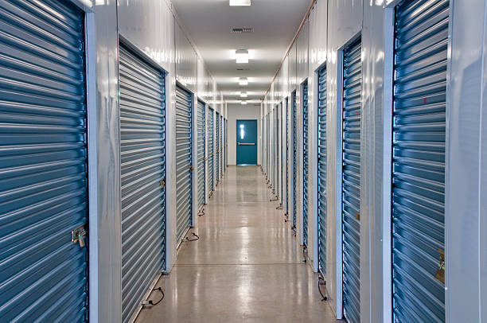

Looking for secure self-storage solutions in Beaver Oklahoma ? Our convenient, affordable storage units offer 24/7 access, security, and protection for your belongings.
Click Here To Call Us (877) 848-1711When you need extra space in Beaver Oklahoma our self-storage services provide the ideal solution for both personal and business needs. Whether you’re downsizing, moving, or simply need a safe place to store seasonal items, we offer a wide range of storage unit sizes to fit your needs. Our Beaver Oklahoma self-storage facilities are secure, clean, and accessible 24/7, ensuring your belongings are always within reach whenever you need them.
Our climate-controlled units are perfect for sensitive items such as electronics, furniture, or documents, protecting them from extreme temperatures and humidity. With cutting-edge security features including video surveillance, electronic gates, and personalized access codes, you can trust that your items are safe and secure at all times.
In addition to self-storage, we also offer convenient moving and packing supplies to make your experience hassle-free. From sturdy boxes to packing tape and bubble wrap, we have everything to make your move smoother. Our friendly and professional team is always available to assist you in choosing the right storage unit and offering advice on how to organize your space efficiently.
Choose the best self-storage provider in Beaver Oklahoma for your personal and business storage needs. With flexible rental terms, competitive rates, and a commitment to customer satisfaction, we are the trusted choice for residents and businesses across Beaver Oklahoma .
Residential & commercial Self Storage
Quality services at affordable prices
Immediate 24/ 7 emergency services


Looking for a safe and budget-friendly solution for your storage needs in Beaver Oklahoma ? Our self-storage facility offers the perfect balance of security, convenience, and affordability. Whether you need to store seasonal items, personal belongings, or business inventory, we provide a variety of storage unit sizes to meet your unique requirements.
At , we prioritize the security of your items. Our facility is equipped with state-of-the-art security features, including 24/7 surveillance cameras, secure gate access with personalized PIN codes, and on-site staff to ensure everything is protected. We understand that peace of mind is key when choosing a self-storage provider, which is why we go the extra mile to offer top-tier security.
Not only is our facility secure, but we also offer competitive pricing to ensure that your storage experience remains affordable. Whether you're looking for short-term or long-term storage solutions, our flexible rental options and budget-friendly rates will help you store with ease without breaking the bank.
Located conveniently in Beaver Oklahoma we are the go-to choice for individuals and businesses looking for a reliable and accessible self-storage solution. Our easy online booking system makes it simple to rent a unit, and our friendly customer service team is always ready to assist you with any questions.
Choose us for your storage needs in Beaver Oklahoma and enjoy a safe, affordable, and hassle-free experience!
Residential & commercial Self Storage
Quality services at affordable prices
Immediate 24/ 7 emergency services
Easy accessibility is essential when it comes to storing and retrieving your belongings. Our Drive-Up Access Storage in Beaver Oklahoma offers a convenient solution, allowing you to drive right up to your unit for effortless loading and unloading.
This feature is particularly beneficial for businesses and individuals moving large items, as it saves time and effort. Our secure units ensure that all your possessions are safe while you can quickly retrieve or store items at your convenience. Choose our drive-up access facilities for a hassle-free storage experience tailored to your needs.

Life doesn’t stop after business hours, and neither should your access to your stored belongings. Our 24/7 Access Storage Facilities in Beaver Oklahoma give you the freedom to retrieve and store your items whenever you need them, providing ultimate flexibility.
Whether you’re running a business or managing personal storage, having around-the-clock access is invaluable. Our facilities are equipped with top-of-the-line security features, offering you peace of mind while ensuring that you can always get to your belongings. With our 24/7 access, you’re never limited by time, allowing you to manage your storage needs effectively.

Your belongings deserve the highest level of security, which is precisely what our self-storage solutions with advanced security features provide. Our facilities utilize cutting-edge technology, including gated access, individual alarms, and 24/7 video surveillance, ensuring comprehensive protection for your items.
Our dedicated staff is trained to assist with any questions or concerns you may have and help you find the right unit size for your personal or business needs. These advanced security features mean you can store your most valuable items with confidence, knowing they are well-guarded. Choose us for self-storage solutions that prioritize safety and convenience .

Sometimes, you need to store your belongings for an extended period. Our long-term storage solutions provide a secure, affordable answer for personal and business needs. We offer varied unit sizes, climate-controlled options, and flexible terms tailored to your requirements. Our professional staff is here to assist you, ensuring that your experience is smooth and that your items stay safe for as long as you need. Count on us for dependable long-term storage solutions.

Enthusiasts know that proper storage is key to preserving the quality of wine. Our specialized wine storage units in Beaver Oklahoma provide ideal conditions for your collection, with climate control and humidity regulation to ensure that your bottles are kept in peak condition. We also prioritize security, so you can rest easy knowing that your valuable collection is protected. With easy access whenever you need to add to or curate your collection, we provide the perfect solution for wine lovers. We are recognized for our focus on customer satisfaction and expertise in wine storage, setting us apart in the industry.
Protecting valuable art and antiques is paramount for collectors and galleries alike. Our Art and Antique Storage provides a secure, climate-controlled environment for your most precious items, ensuring they remain in pristine condition.
We understand the unique requirements of storing fine art and antiques, which is why our facilities are equipped to manage environmental conditions precisely. Advanced security systems ensure that your artwork and collectibles are safe from theft and damage. Choose us for a storage solution that recognizes the value and significance of every piece in your collection.

If you're an outdoor enthusiast, you'll want a safe place to store your boat and trailer when they are not in use. Our dedicated boat and trailer storage solutions in Beaver Oklahoma offer both covered and uncovered options to accommodate your needs. With secure facilities that prioritize your investments' safety, you can access your vehicles easily whenever you're ready to hit the water. Our friendly staff is knowledgeable about the best practices for storing these types of vehicles, ensuring that you get expert advice. Choose us for our reliability, competitive pricing, and dedication to providing superior storage options for your recreational vehicles.

Being prepared for unexpected emergencies requires having supplies securely stored and readily accessible. Our storage solutions for emergency preparedness supplies offer a clean, organized, and secure environment for everything from food supplies to first aid kits and emergency kits. With flexible access hours and all the security features you need, you can store your supplies without worry. We are committed to helping you stay prepared, providing excellent service, competitive pricing, and the peace of mind that comes from knowing your essential items are safe.

For hobbyists and crafters managing supplies can often lead to clutter. Our Storage for Hobby and Craft Supplies solutions provide the perfect solution, offering a dedicated, organized space to store all your crafting materials.
Our units come in various sizes, personalized to fit your inventory from art supplies to scrapbooking materials. With easy access and climate-controlled conditions, your supplies remain in excellent shape while being conveniently stored. Choose us for a stress-free solution that helps you keep your creative space organized and inspiring.
Years Experience
Expert Technicians
Satisfied Clients
Compleate Projects
When it comes to storing your valuables, Secure Self Storage in Beaver Oklahoma offers the perfect blend of safety, convenience, and flexibility. Whether you're moving, renovating, or simply need more space, we are your trusted partner in keeping your items secure and accessible.
Our state-of-the-art facilities are equipped with 24/7 surveillance and top-tier security systems, ensuring your belongings are safe at all times. We prioritize your peace of mind with climate-controlled units designed to protect sensitive items like electronics, documents, and furniture from extreme temperatures and humidity. With a range of unit sizes, we offer the flexibility to accommodate your specific needs, from small personal items to large household belongings.
At Secure Self Storage, customer satisfaction is at the heart of what we do. Our friendly and professional staff is always available to guide you through the process and help you select the right storage solution. Conveniently located in Beaver Oklahoma we make it easy to access your storage unit whenever you need it, with flexible rental terms and affordable rates that cater to any budget.
Whether you're looking for short-term storage during a move or a long-term solution for your growing business, Secure Self Storage is your trusted choice in Beaver Oklahoma . Experience the difference today and discover why our customers return to us time and time again for their storage needs.
In today's fast-paced and often cluttered world, finding the right solution for household storage needs is essential. Whether you are relocating, downsizing, or just need extra space for seasonal items, our household storage solutions in Beaver Oklahoma are tailored to meet your diverse needs. With secure, clean, and convenient storage facilities, you can trust us to keep your belongings safe. We offer a range of unit sizes and types to accommodate everything from small boxes to large furniture pieces. Our facilities are equipped with advanced security features, ensuring your items are protected 24/7. Choose us for our commitment to customer satisfaction, flexibility, and competitive pricing.
Furniture can be one of the most challenging things to store correctly. Whether you are downsizing, moving, or simply need extra space, our furniture storage services are the perfect solution. We offer climate-controlled units that ensure your valuable furniture is kept in pristine condition, free from humidity or extreme temperatures that can cause damage.
Our facilities are equipped with advanced security features, including 24/7 surveillance and secure access control to protect your belongings. With our various unit sizes, you can store everything from single pieces of art to entire rooms of furniture. Our friendly staff is committed to helping you find the best storage solution for your needs and can provide packing materials and guidance for transporting your items. Choose us for reliable and safe furniture storage and enjoy peace of mind knowing your possessions are well taken care of.
As the seasons change, so do our storage needs. From holiday decorations to lawn equipment, our seasonal item storage solutions provide the ideal space for all your seasonal items. We understand that our clients accumulate many things throughout the year, and it can be overwhelming to find room at home for everything. That’s where we come in.
Our facility offers secure storage options that feature climate control, ensuring that your delicate decorations and equipment are preserved throughout the seasons. With flexible leasing options, you can rent storage for as long as you need it, whether it’s just a few months during the holiday season or longer. Our location is easily accessible, allowing you to retrieve or store your seasonal items quickly and at your convenience. Trust us with your seasonal storage needs and reclaim your valuable home space.
Looking for a personal storage unit that suits your unique needs? Our personal storage units come in a range of sizes to accommodate everything from small boxes to larger furnishings. Whether you are dealing with a life transition, such as a marriage, divorce, or moving, having additional storage can simplify the process.
We take security seriously, which is why our facilities are equipped with state-of-the-art features, including secure locks, alarm systems, and 24/7 surveillance. Our friendly staff is trained to provide you with personalized service to ensure you're making the right choice for your storage needs. We are committed to providing a safe and clean environment for all your personal items. Experience convenience, security, and flexibility with our personal storage units .
College life can be hectic, especially when it comes time to move in and out of dorms or apartments. Our student storage services in Beaver Oklahoma are designed specifically for students, providing an affordable and flexible solution for your storage needs. Whether you need summer storage or a place to keep your belongings during a semester abroad, we have you covered.
Our storage units are conveniently located near major colleges, making it easy to access your items. We offer competitive pricing, along with month-to-month contracts that allow students to store their items without long-term commitments. Our accessible facilities include drive-up options for easy loading and unloading, ensuring you don’t face any hassles when moving in or out. Trust us with your storage needs, and make your college experience smoother with our student storage services .
Moving can be one of the most stressful experiences in life, but with our Temporary Storage solutions you can ease some of that burden. Whether you’re downsizing, relocating across town, or moving to a new state, our storage options provide a flexible solution to store your belongings safely during the transition period.
Our units are clean, secure, and available in various sizes, making it easy to find the right fit for your needs. By choosing us, you benefit from our commitment to excellent customer service and our easy access procedures that help streamline your move. Our facilities prioritizing security with 24/7 surveillance mean your belongings are safe while you’re busy organizing your new home.
Downsizing your home can be an emotional yet liberating process. Whether you are moving to a smaller space or transitioning to retirement living, our storage solutions for downsizing in Beaver Oklahoma can help ease the burden. We provide a variety of unit sizes to accommodate everything you want to keep, from cherished family heirlooms to furniture that won’t fit in your new space.
Choosing a reliable storage facility means you can keep your belongings safe during this transition. Our facilities offer top-tier security features, climate-controlled options, and easy access for when you need to retrieve items. We’re here to assist you through the entire storage process, offering advice and support to ensure you feel comfortable with your choices. Trust us to provide the flexible storage solutions you need while downsizing .
We understand the unique challenges faced by military families, especially with frequent relocations and deployments. Our Storage for Military Families services provide dedicated support for those who serve our country. We offer flexible storage solutions designed to accommodate the transient lifestyle of military personnel.
Our facilities feature secure, climate-controlled storage units that protect your belongings and offer convenience during your frequent moves. We also understand the importance of being budget-conscious, so we provide military discounts. The safety and accessibility of your items are our top priority, allowing you to focus on your service without the stress of worrying about your personal belongings.
For outdoor enthusiasts, having the right RV and boat storage solutions is crucial. Our dedicated RV and boat storage options provide ample space for your vehicles in a secure and accessible environment. We offer both covered and uncovered storage options to protect your investment while keeping them easily accessible for your next adventure. Our facilities are equipped with surveillance cameras, gated access, and well-lit surroundings, ensuring the safety of your vehicles. Choose us for our industry expertise, flexibility, and commitment to ensuring your recreational vehicles are cared for just as you would.
If you need a place to store your vehicle, our vehicle storage solutions in Beaver Oklahoma are designed to meet all types of storage needs—from classic cars to day-to-day vehicles. We offer secure, climate-controlled environments ideal for preserving your vehicle’s condition, so whether you need short or long-term storage, we've got you covered. Our facilities boast high-tech security systems, making sure your vehicle remains safe until you're ready to drive it again. We stand out with our comprehensive customer service, competitive pricing, and reliability, making your vehicle storage experience completely stress-free.
Every successful business requires reliable storage for their inventory, whether it's seasonal items, surplus stock, or equipment. Our business inventory storage solutions in Beaver Oklahoma provide a convenient and secure location for keeping your products organized and easily accessible.
We understand the importance of efficient storage for your business, which is why our facilities are equipped with professional-grade security and climate control. Our flexible leasing options allow you to scale up or down as your inventory needs change, giving you the flexibility to grow your business without worrying about space limitations. Additionally, our drive-up access makes loading and unloading a breeze. Choose us for your business inventory storage needs and give your business the competitive edge it deserves.
Managing documents and files can pose a challenge, especially for businesses dealing with large amounts of paperwork. Our document and file storage solutions directly address these needs. We provide secure, organized storage options that allow you to maintain compliance, confidentiality, and ease of access.
Our facilities feature climate-controlled environments to keep your documents safe from damage due to humidity or extreme temperatures. Additionally, we offer advanced security measures to protect your sensitive information. We understand the importance of maintaining an organized filing system, so our staff is trained to assist you in creating a storage plan that works for your unique situation. Rely on us for efficient document and file storage solutions in Beaver Oklahoma and reduce your worries about lost or damaged paperwork.
Whether you're renovating, relocating, or downsizing, our office furniture storage in Beaver Oklahoma is a smart choice for businesses looking to manage their assets efficiently. Our storage units are designed to accommodate various sizes of office furniture, all while ensuring maximum protection from the elements. Choose us for competitive pricing, flexible storage solutions, and unparalleled customer service that understands the needs of modern offices. Let us help you create a more organized and functional workspace.
Contractors and tradespeople often require extra space for tools, equipment, and materials. Our Contractor Storage Units are designed specifically for those in the construction industry who need a secure and scalable solution.
We offer flexible space options to accommodate everything from hand tools to heavy machinery. With 24/7 access, our contractor storage units allow you to retrieve what you need on your schedule without interruption to your projects. Our facilities prioritize security and convenience, meaning you can focus on your work rather than worrying about your supplies. Partnering with us means gaining a trustworthy asset for your business.
As a retailer, managing inventory can significantly impact your business operations. Our retail stock storage solutions in Beaver Oklahoma streamline the storage process, allowing you to keep your products organized and accessible. We offer secure storage facilities with advanced security features, ensuring that your stock remains safe and in perfect condition. Partner with us for flexible rental agreements, competitive pricing, and unlimited access to your inventory, making it easier to serve your customers.
E-commerce businesses need effective storage solutions to manage their growing inventories. Our e-commerce product storage services are tailored to meet the unique demands of online retailers. With easily accessible units and flexible contract terms, we make it simple to store and retrieve your products as your business evolves. Benefit from our expert customer service, allowing you to focus on selling while we take care of your storage needs.
The pharmaceutical industry has specific storage and handling requirements for safety and compliance. Our pharmaceutical storage solutions provide climate-controlled environments necessary for sensitive and temperature-regulated products. We take security seriously, employing advanced systems and protocols to ensure your products are handled with the utmost care and confidentiality. Our knowledgeable staff understands the complexities of pharmaceutical storage, providing reliable customer service and ensuring that your inventory is maintained to the highest standards. We are committed to compliance, quality control, and the safe storage of medical products.
Planning events can be hectic, especially when it comes to logistics and storage. Our event equipment storage solutions provide a reliable place to store all your event supplies, from chairs and tables to decorations and audio-visual equipment.
Our facilities are conveniently located and equipped with ample space for all your event storage needs. With climate-controlled units, you can safeguard your supplies from damage, ensuring they are always ready for your next event. We offer flexible short-term and long-term storage options tailored to your specific requirements. Our experienced team understands the event industry and can provide support whenever needed. Trust us with your event equipment storage and focus on creating memorable experiences for your guests.
Storing commercial vehicles can be a challenge, especially in urban settings. Our commercial vehicle storage solutions in Beaver Oklahoma are designed to accommodate vans, trucks, and more, providing secure options for businesses on the go. With ample space and advanced security features, you can trust us to keep your fleet safe and accessible whenever you need it. Enjoy flexible pricing and dedicated service from a provider committed to supporting your commercial needs.
Many businesses face challenges related to warehouse space, especially during peak seasons. Our Warehouse Overflow Storage solutions offer a commitment to providing additional space for excess inventory, seasonal products, or stock overflow.
By utilizing our storage solutions, businesses can maintain optimal organization in their facilities without needing to invest in larger warehouse space. Our secure and easily accessible units ensure your goods are safe and readily available. Partner with us for seamless integration into your inventory management strategy, enhancing efficiency and effectiveness.
Individuals and businesses alike understand the importance of protecting belongings from extreme temperatures and humidity. Our Climate-Controlled Storage Units offer a specialized environment to safeguard sensitive items, from electronics to fine art.
By maintaining a consistent climate, we help prevent damage commonly associated with fluctuating temperatures and exposure to the elements. Our secure units come equipped with 24/7 access and top-notch security systems to ensure your valuables are always protected. Choose our climate-controlled solutions for the peace of mind that comes with knowing your belongings are safe and well cared for.
Finding the perfect self-storage unit in Beaver Oklahoma is easy when you know the steps to take. Whether you're moving, decluttering, or need extra space for your belongings, reserving a storage unit in Beaver Oklahoma is a straightforward process that can be done in just a few simple steps.
Research Storage Facilities in Beaver Oklahoma : Start by researching self-storage facilities in your area. Look for options that are conveniently located, secure, and offer a variety of unit sizes. Many facilities in Beaver Oklahoma offer features like 24/7 access, climate control, and advanced security systems.
Choose the Right Unit Size: Consider how much space you need. Storage units come in various sizes, from small lockers to large units for furniture and vehicles. Take inventory of your items to determine the best size for your needs.
Reserve Online or by Phone: Most self-storage facilities in Beaver Oklahoma offer online reservations for convenience. You can easily book your unit through their website or call the facility to make a reservation. Some facilities even offer discounts or promotions for online bookings.
Complete the Paperwork and Payment: Once you've chosen a unit and confirmed availability, complete the necessary paperwork. You may be required to pay a deposit or the first month's rent upfront. Many facilities offer flexible payment options, including month-to-month leases.
Prepare for Move-In: After reserving your storage unit, make arrangements for moving your belongings. Ensure you have packing materials like boxes, tape, and bubble wrap to keep your items safe. Some facilities in Beaver Oklahoma even offer moving truck rentals to make the process even easier.
Reserving a self-storage unit in Beaver Oklahoma is simple when you follow these steps. With the right preparation and a bit of research, you'll find a secure and convenient storage solution tailored to your needs.
Beaver is a town and county seat in Beaver County, Oklahoma, United States. The community is in the Oklahoma Panhandle. As of the 2020 census, the town’s population was 1,280. The city is host to the annual World Cow Chip Throwing Championship. Held in April, 'Cow Chip' brings attention from nearby cities with a parade, carnival, and cowchip throwing.
Yes, we sell packing supplies like boxes, tape, and bubble wrap at our Beaver Oklahoma location.
Yes, our spacious storage units in Beaver Oklahoma are ideal for storing furniture and other household items.
Absolutely! Secure Self Storage allows you to reserve units online through our user-friendly website for Beaver Oklahoma .
Yes, we provide flexible rental options, including short-term leases, at our Beaver Oklahoma facility.
Yes, we provide vehicle storage options for cars, RVs, and boats at our Beaver Oklahoma facility.
Contact our office to provide notice and complete the termination process.
Yes, Secure Self Storage provides climate-controlled units to protect your belongings from extreme temperatures and humidity.
Yes, our storage facilities offer 24/7 access for your convenience.
Yes, Secure Self Storage allows you to upgrade or downgrade your unit size at our Beaver Oklahoma location, subject to availability.
The cost depends on the unit size and type. Contact Secure Self Storage for competitive rates and special offers.
While we recommend renter’s insurance, Secure Self Storage also offers optional insurance plans.
Secure Self Storage offers discounts for long-term rentals . Contact us for details.
You need a valid ID and a signed rental agreement to rent a unit at Secure Self Storage .
Yes, businesses can use our storage units for inventory, files, and equipment storage.
We accept various payment methods, including credit cards, debit cards, and online payments .
Yes, we offer ample parking space for easy loading and unloading at our Beaver Oklahoma facility.
Hazardous materials, flammable items, perishable goods, and illegal substances are prohibited in our Beaver Oklahoma storage units.
Yes, late fees apply for missed payments at Secure Self Storage in Beaver Oklahoma . Please contact us to set up reminders.
Yes, Secure Self Storage provides elevators for easy access to upper-level units.
Secure Self Storage offers month-to-month contracts for maximum flexibility.
Yes, Secure Self Storage implements regular pest control measures to ensure a clean environment.
Secure Self Storage prioritizes safety with features like gated access, security cameras, and individual unit locks in Beaver Oklahoma .
Secure Self Storage offers a range of storage units in Beaver Oklahoma including climate-controlled units, drive-up access units, and varying sizes to suit your needs.
Yes, our facilities allow round-the-clock access to your storage unit.
You can move in on the same day of reservation at Secure Self Storage in Beaver Oklahoma depending on availability.
The office hours vary, but our friendly staff in Beaver Oklahoma is available during standard business hours.
If you lose your key, contact our team at Secure Self Storage in Beaver Oklahoma for assistance with lock replacement.
Yes, appliances can be stored in Secure Self Storage units in Beaver Oklahoma . Ensure they are clean and dry beforehand.
No deposit is required to rent a storage unit at Secure Self Storage .
Our team at Secure Self Storage can assist you in selecting the perfect unit based on your belongings.
Secure Self Storage in Beaver Oklahoma is fantastic. The facility is always clean and well-secured, and the customer service is excellent. I appreciate the reasonable rates and convenient location. I would definitely recommend them to anyone looking for storage!
Profession
This is hands down the best self-storage facility in Beaver Oklahoma ! Secure Self Storage provides top-notch service, security, and affordable rates. I’ve never had an issue with my unit, and the customer service is always friendly and professional. Highly recommend!
Profession
I’ve been renting a unit at Secure Self Storage in Beaver Oklahoma for a few months, and I am extremely pleased with their service. The staff is friendly, the facility is secure, and the pricing is affordable. I highly recommend them for your storage needs!
Profession